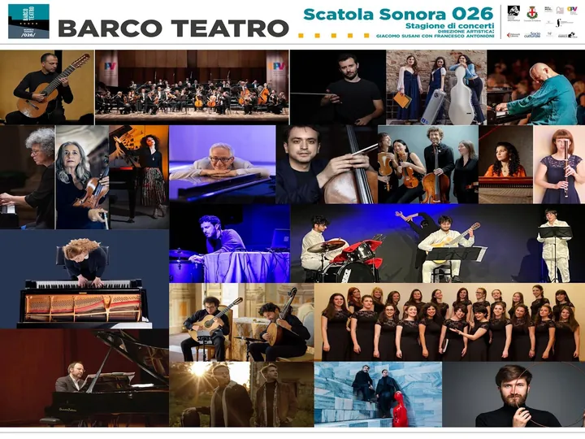

da ven 9 gen a sab 19 dic
Barco Teatro| Rassegna musicale "Scatola sonora"
Barco Teatro è lieto di presentare la nuova " Scatola Sonora 2026 ": un programma di 18 concerti di musica classica, da gennaio a dicembre, articolati come sempre tra concerti multi-strumentali di repertorio, concerti dedicati specificamente alla chitarra classica in diverse…
 Indicazioni
Indicazioni
- Costi e prenotazioni
- Costo non indicato · Prenotazione non indicata
- Programma
- Programma da verificare. Apri la fonte ufficiale per orari e possibili aggiornamenti.
- In caso di maltempo
- Nessuna indicazione specifica pubblicata.
- Note
- Acquisito automaticamente dalla fonte.
L’EVENTO
Descrizione completa
Barco Teatro è lieto di presentare la nuova " Scatola Sonora 2026 ": un programma di 18 concerti di musica classica, da gennaio a dicembre, articolati come sempre tra concerti multi-strumentali di repertorio, concerti dedicati specificamente alla chitarra classica in diverse combinazioni cameristiche, concerti dedicati alla contemporaneità.
Il cartellone si inaugurerà venerdì 9 gennaio con un concerto sinfonico "in trasferta" all'Auditorium Pollini: un evento molto importante per Barco Teatro, in collaborazione con OPV - Orchestra di Padova e del Veneto, a cui vi invitiamo fin d'ora a non mancare.
Tutti i concerti di "Scatola Sonora" 2026 avranno inizio alle ore 20.30 e si terranno a Barco Teatro ad eccezione del concerto di inaugurazione del 9 gennaio (Auditorium Pollini) e del concerto del 24 ottobre (Scuola della Carità).
Tutti i concerti saranno preceduti da brevi introduzioni all'ascolto ; per chi desidera (solo per i concerti a Barco Teatro), possibilità di aperitivi e cicchetti al bar del teatro in attesa del concerto, dalle ore 19.00 alle ore 20.15.
Per il programma dettagliato di tutti i concerti e le informazioni relative ai protagonisti, per conoscere le modalità di acquisto e costi di biglietti / abbonamenti, vi invitiamo a consultare il sito web www.barcoteatro.it .
Barco Teatro vi aspetta per condividere un altro anno di musica straordinaria in un luogo straordinario.
IL PROGRAMMA
Programma e orari
Appuntamenti raccolti dalle fonti elencate. Dove manca un orario, non è ancora disponibile in questa scheda.
Programma pubblicato
- 2026-01-09 — 2026-01-09 · 20:30:00
- 2026-01-24 — 2026-01-24 · 20:30:00
- 2026-02-07 — 2026-02-07 · 20:30:00
- 2026-02-21 — 2026-02-21 · 20:30:00
- 2026-03-07 — 2026-03-07 · 20:30:00
- 2026-03-21 — 2026-03-21 · 20:30:00
- 2026-04-11 — 2026-04-11 · 20:00:00
- 2026-04-18 — 2026-04-18 · 20:30:00
- 2026-05-09 — 2026-05-09 · 20:30:00
- 2026-05-23 — 2026-05-23 · 20:30:00
- 2026-09-26 — 2026-09-26 · 20:30:00
- 2026-10-10 — 2026-10-10 · 20:30:00
- 2026-10-24 — 2026-10-24 · 20:30:00
- 2026-11-14 — 2026-11-14 · 20:30:00
- 2026-11-28 — 2026-11-28 · 20:30:00
- 2026-12-05 — 2026-12-05 · 20:30:00
- 2026-12-12 — 2026-12-12 · 20:30:00
- 2026-12-19 — 2026-12-19 · 20:30:00
INFORMAZIONI UTILI
Prima di partire
- Controllare la fonte prima di partire.
ORGANIZZAZIONE